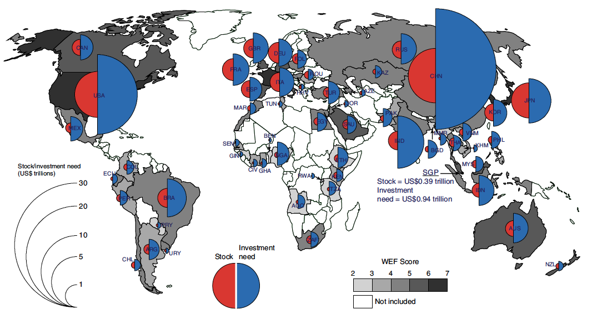
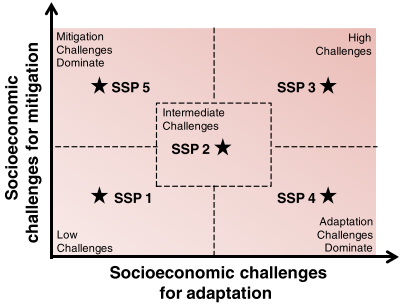
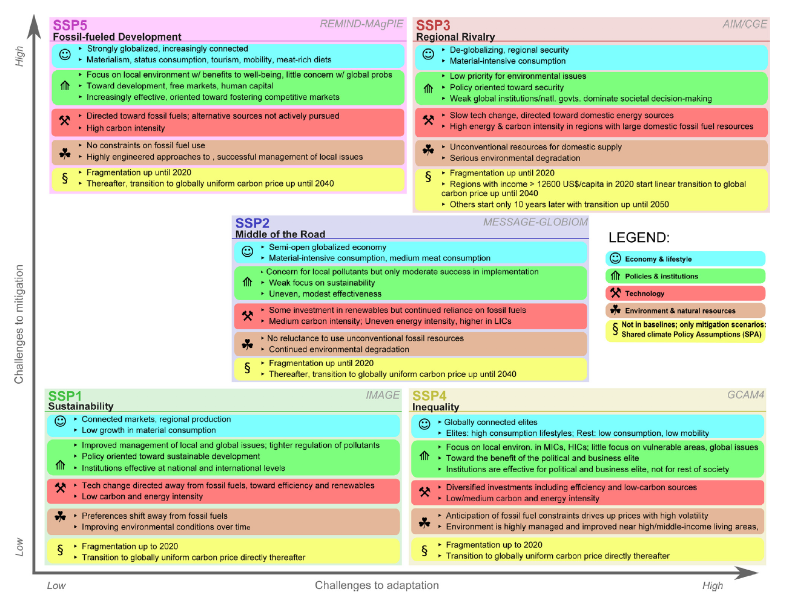
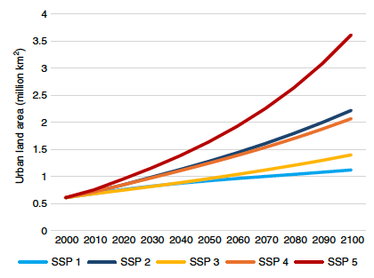
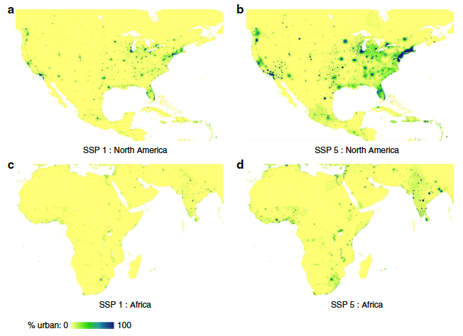

In this lecture, an outlook is provided for the need to invest in infrastructure in the near and distant future alongside the main drivers of infrastructure development. In particular, we will take a deeper dive into the different socio-economic scenarios, including a discussion on the main differences between them.
In lecture 12.1, we briefly discussed the multiple drivers of future infrastructure risk. The main drivers identified were changes in population and economic growth, which result in a larger demand for infrastructure services. This can result in either a more intense use of existing infrastructure, the expansion of existing infrastructure networks, or new infrastructure to be built. In addition to that, we saw that there are dependencies and feedbacks between society and infrastructure. For instance, the COVID-19 pandemic has changed the way we value (e.g. natural areas) and use infrastructure (e.g. more working from home).
It is not yet clear how much infrastructure is needed in the near and distant future. For instance, some initial estimates (see Figure 13.1.1) show that an additional USD94 trillion of investments is needed by 2040, which is more than the value of existing infrastructure (USD50 trillion) (Thacker et al. 2019). Others have estimated that low- and middle-income countries require investments of around 4.5% of GDP to achieve the infrastructure-related Sustainable Development Goals (SDGs) and stay on track to limit climate change to 2°C (Rozenberg and Fay 2019). Projections made by the Organisation for Economic Co-operation and Development (OECD) and the International Energy Agency (IEA), on the other hand, estimate that an additional 60% increase in length of road and railway is needed by 2050, which is equal to around USD45 trillion (Dulac 2013).
Whatever the exact number might be, there is an enormous amount of infrastructure needed to meet the needs of our future society.

Figure 13.1.1: An illustration of the global infrastructure gap for 2040, with the red circle showing the current stock and the blue circle the investment need (Thacker et al. 2019)
To better understand where largest demand for new infrastructure lies, we can distinguish different drivers of infrastructure needs. As mentioned, a growing population and urban expansion highlight the need for an increasing coverage and expansion of infrastructure services. Most infrastructure networks, such as road, rail, water, electricity and telecommunications are directly coupled to the growth in populations. Socio-economic growth may also change the ways in which we can afford certain infrastructure services, shifting demand. For instance, people might buy a car and start using the road network, while initially they could only afford taking the bus. Additionally, larger wealth may shift the quality of infrastructure being provided. For instance, water was initially only treated up to certain standards, but this will be upgraded to higher standards given society’s ability to pay for better quality water. Similarly, wealth changes might shift the need for a denser network, such as a larger number of telecommunications towers, to increase service speed. Other infrastructure types, such as ports and airports, are more dependent on developments in terms of international trade flows or tourism, which are not just confined to national boundaries. For instance, increasing demand for products from a certain country requires that country to increase the port capacity. For each type of infrastructure, it is therefore important to understand the current use and capacity of the systems and the main drivers of future infrastructure needs.
Similar to the climate scenarios, scenarios of global development that cover the uncertainty in future socio-economic conditions have been developed. These societal development scenarios, called the ‘Shared Socio-economic Pathways’ (SSP) cover both quantitative and qualitative components (O’Neill et al. 2017).
The SSP scenarios are designed to construct a wider range of outcomes. In total, five SSP scenarios are constructed with different development outcomes for the year 2100 (Figure 13.1.2) They range from a sustainability scenario (SSP1) to an inequality scenario (SSP4) and a fossil-fuelled development scenario (SSP5). As can be seen, the outcome scenarios differ with respect to the varying challenges of mitigation and adaptation.
Although there is an exhaustive list of assumptions and factors behind all the scenarios, the main demographic factors that drive the models are population growth, fertility, mortality, migration and the degree and type of urbanisation (e.g. well managed or poorly managed). In terms of human development, factors that are included are education, health, equity, gender equality and social cohesion. Similarly, a number of underlying drivers are identified that cover the economy (growth, trade, consumption and diet), institutions (international cooperation, environmental policy), technology (carbon intensity, energy intensity, technology transfer) and natural resources (fossil constraints, environment, agriculture, land-use).
In the next sub-section, we will discuss some of the major differences between the five scenarios.

Figure 13.1.2: The five SSP scenarios and how they relate to the challenges for adaptation and mitigation. The key words show the main differences between the scenarios (O’Neill et al. 2014)
In the previous sub-section we discussed that the Shared Socio-economic Pathway scenarios are based on a large number of underlying drivers. However, we can briefly summarise the main differences between the scenarios (see Figure 13.1.3).
SSP1 leads to low challenges for both mitigation and adaptation, mainly as a result of sharp income growth, reduced inequality, good institutions, and a shift over time that prioritises sustainable development.
SSP3 is the opposite of SSP1 with challenges to both mitigation and adaptation. The challenges arise due to slow income growth and slow technological change, ineffective institutions and limited human capital.
SSP2 is a middle-of-the-road scenario leading to intermediate challenges to mitigation and adaptation.
SSP4 and SSP5 are a mix of the aforementioned scenarios. For SSP4, there is a growing inequality across and within countries. Moreover, there is low economic growth but high technological growth and human capital, making the mitigation challenge low. However, the adaptation challenge remains higher due to the large inequality in terms of income, education and access to institutions. In SSP5, economic growth is large, making adaptation challenges relatively low. However, energy and carbon demand grow quickly with a large reliance on fossil fuels, hindering mitigation efforts.
These broad-scale scenarios can form the input of a range of additional models, including projections of the future risk of hazard impact under the various scenarios. To do this, however, the SSP scenarios should be coupled to spatially explicit maps of exposed assets.

Figure 13.1.3: The key assumptions of, and main differences between, the SSP scenarios with regards to adaptation and mitigation (Bauer et al. 2017)
To illustrate what the SSP scenarios can be used for, two examples are shown below.
In the first example (Gao and O’Neill 2020), the SSP scenarios were used to model the future evolution of urbanisation. In Figure 13.1.4, the evolution of the total amount of urban land area is depicted, showing that the urban land area for SSP5 may be around 3 times larger than in SSP1 and 75% higher than SSP2 and SSP4. Moreover, the spatial evolution of urban areas may differ considerably between scenarios. In Figure 13.1.5, the spatial evolution of urban areas is shown for North America and Africa. For both the United States and Africa, a large urban encroachment is shown in the coastal areas under SSP5, while this urban expansion is less pronounced in the SSP1 scenario.
In another example (Winsemius et al. 2016), the SSP scenarios were used to project future risk from riverine flooding. For the Mekong Basin, for instance, flood risk may increase by 625% relative to 2010, mainly driven by socio-economic growth. A similar large increase is found for the Yangtze and Indus basins and the basins in Sub-Saharan Africa (Niger, Volta). As evident, the way in which socio-economic growth interacts with risk is very much location specific, therefore requiring spatial scenarios of socio-economic development.

Figure 13.1.4: The evolution of global urban land over the 21st century for different SSP scenarios (Gao and O’Neill 2020)

Figure 13.1.5: Spatial patterns of urbanisation in 2100 for two regions (North America, Africa) and two SSP scenarios (SSP1, SSP5) (Gao and O’Neill 2020)
In this lecture, we have identified the main drivers of future infrastructure needs and the total infrastructure investment gap. We discussed the different scenarios of future socio-economic growth and illustrated how these scenarios can be used to model changes in urbanisation rate and flood risk.